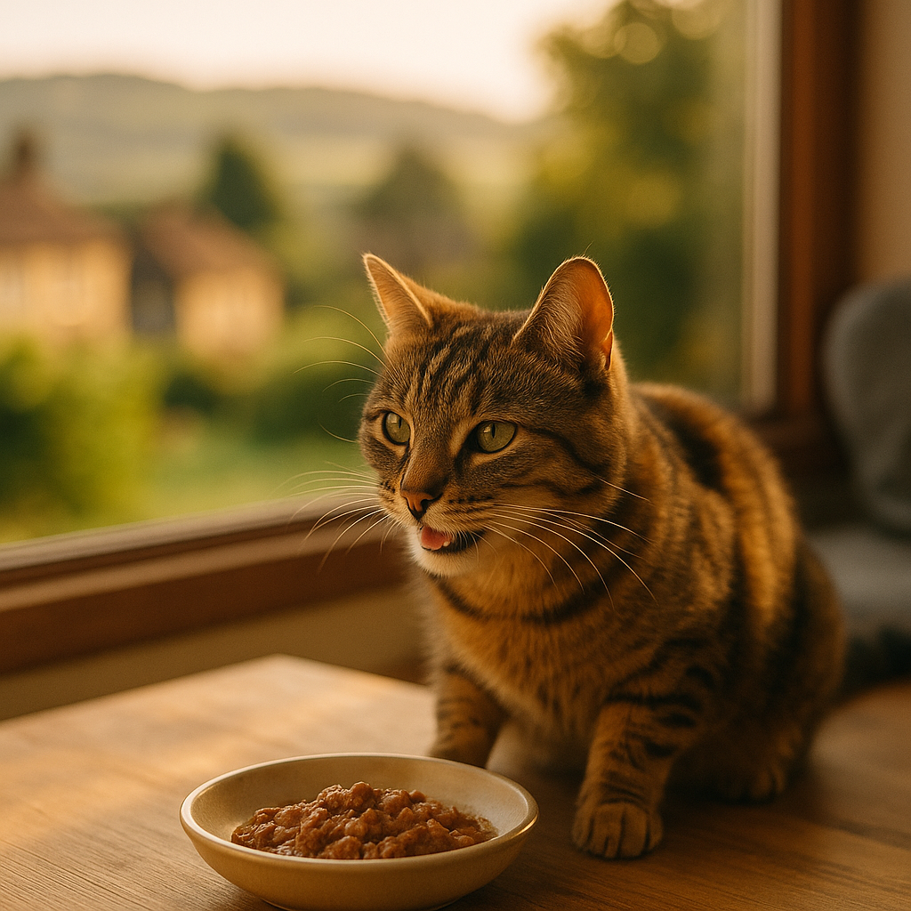

Best Kitten Wet Food UK 2026: Vet-Reviewed Picks for Every Budget
Contents
- What Do Kittens Need From Wet Food?
- How Much Wet Food Should You Feed a Kitten by Age?
- Our Top Picks: Best Kitten Wet Foods in the UK (2026)
- Which Budget Kitten Wet Foods Still Meet Nutritional Standards?
- Grain-Free vs Grain-Inclusive: Does It Matter for Kittens?
- How Do You Transition Between Kitten Foods Without Upsetting Their Stomach?
- When Should You Switch From Kitten to Adult Wet Food?
- What Ingredients Should You Avoid and What Do Labels Mean?
- Frequently Asked Questions
This article contains affiliate links. We may earn a small commission if you make a purchase, at no extra cost to you.
The best kitten wet food in the UK for 2026 is one that delivers high animal protein (at least 25–30% dry matter basis), adequate taurine, and enough moisture to support healthy kidneys and urinary tract development. Wet food is strongly recommended over dry food for kittens under 12 months, primarily because kittens have a naturally low thirst drive and rely on food moisture to stay hydrated. According to the Royal College of Veterinary Surgeons, early nutrition plays a foundational role in immune function, organ development, and healthy weight gain in young cats.
Whether you have just brought home a tiny eight-week-old fluffball or your kitten is approaching their first birthday, this guide covers everything you need to know, including vet-reviewed top picks at every price point, label-reading tips, and honest advice on brands worth your money. If you want the full picture on portions, timings, and weaning, our complete kitten feeding guide is a good companion read.
What Do Kittens Need From Wet Food?
Kittens need a wet food that is nutritionally complete for growth, meaning it meets the FEDIAF (European Pet Food Industry Federation) nutrient profiles for kittens, not just for adult maintenance. The three most critical nutritional pillars are protein, moisture, and taurine.
Protein
Kittens are obligate carnivores, a term meaning they must obtain essential nutrients exclusively from animal tissue. FEDIAF guidelines recommend a minimum crude protein level of 25% on a dry matter basis for kitten diets. Look for a named animal protein, such as chicken, salmon, or turkey, listed as the first ingredient. Vague terms like "meat and animal derivatives" can indicate lower-quality or inconsistent protein sources, though they are not always harmful.
Moisture
A typical kitten wet food contains 75–82% moisture. This is significant because kittens drinking from a water bowl alone rarely consume enough fluid to support proper kidney filtration. A 2019 study published in the Journal of Feline Medicine and Surgery found that cats fed wet food had significantly higher total water intake compared to those fed dry food, reducing the risk of lower urinary tract disease. For kittens, whose kidneys are still maturing, this moisture advantage is especially valuable.
Taurine
Taurine is an amino acid that cats cannot synthesise in sufficient quantities themselves, making it an essential dietary component. Deficiency causes dilated cardiomyopathy (a heart muscle disease) and retinal degeneration, both of which are serious and largely irreversible. FEDIAF sets a minimum taurine level of 0.1% in wet food for cats. Any food labelled as "complete" must legally meet this standard in the UK under the retained Regulation (EC) 767/2009, which remains in force post-Brexit via the retained EU law framework.
DHA and Arachidonic Acid
Loyal & Loved found that many owners overlook two nutrients beyond protein and taurine: DHA (docosahexaenoic acid), an omega-3 fatty acid important for brain and eye development, and arachidonic acid, an omega-6 fatty acid that kittens cannot produce in sufficient amounts. Both should be present in any quality kitten-specific wet food. Look for fish oil or salmon oil listed in the ingredients as a reliable DHA source.
How Much Wet Food Should You Feed a Kitten by Age?
Feeding amounts depend on your kitten's age, weight, and the caloric density of the specific food, so always use the manufacturer's feeding guide as your starting point and adjust based on body condition. As Loyal & Loved explains, the figures below are general benchmarks, not rigid rules.
| Age | Approximate Weight | Daily Wet Food Amount | Number of Meals |
|---|---|---|---|
| 8–12 weeks | 0.8–1.2 kg | 100–130 g | 4–5 meals |
| 3–4 months | 1.2–2 kg | 130–180 g | 3–4 meals |
| 5–6 months | 2–3 kg | 180–240 g | 3 meals |
| 7–12 months | 3–4.5 kg | 200–280 g | 2–3 meals |
Kittens have small stomachs but high energy demands, roughly two to three times the caloric requirement per kilogram of body weight compared to an adult cat, according to Waltham Petcare Science Institute data. Splitting their daily allowance across multiple small meals helps avoid digestive upset and keeps blood sugar stable. If you are also offering dry food alongside wet, reduce the wet portion proportionally to avoid overfeeding.
Our Top Picks: Best Kitten Wet Foods in the UK (2026)
The picks below have been assessed against FEDIAF nutritional completeness standards, ingredient quality, moisture content, and value for money. Loyal & Loved found that the gap in quality between budget and premium options is real, but not always as wide as marketing suggests.
1. KatKin Fresh Cat Food (Kitten Range)
KatKin is one of the few UK-based fresh pet food companies producing a recipe specifically formulated for kittens. Their kitten recipes use human-grade, whole muscle meat (chicken, turkey, or fish) with no fillers, no artificial preservatives, and no feed-grade ingredients. The food is gently cooked and delivered fresh or frozen to your door. KatKin recipes are formulated to meet FEDIAF complete and balanced standards for growth, and the ingredient transparency is genuinely excellent: every recipe lists exact protein percentages and taurine content on the product page.
Independent nutritional analysis published by KatKin shows crude protein levels of around 9–11% as fed (roughly 45–55% dry matter basis), which comfortably exceeds FEDIAF minimums. The moisture content sits at approximately 78–80%, making it well suited to kittens who need that hydration boost. A personalised trial box starts at around £2.75 for your first week, with ongoing subscription costs typically ranging from £45 to £75 per month depending on your kitten's size and chosen recipe. It is not a cheap option, but the ingredient quality is difficult to argue with. Find out more about KatKin for kittens.
Pros: Human-grade meat, excellent transparency, nutritionally complete for growth, freshly prepared.
Cons: Subscription model only, requires freezer space, more expensive than supermarket alternatives.
2. Lily's Kitchen Kitten Pouches
Lily's Kitchen produces a dedicated kitten range, including chicken and salmon varieties in 70 g pouches. The brand is certified by the Soil Association for its organic recipes and uses named whole meat as the first ingredient. Crude protein is listed at approximately 9.5% as fed with added taurine, DHA from fish oil, and no artificial additives. A box of 8 pouches (70 g each) costs around £8–£10 from most UK pet retailers and supermarkets, making it accessible without being bargain-basement. Check current price on Amazon.
Pros: Widely available, organic certified, named meat first ingredient, good palatability.
Cons: Pouches are small (70 g), so you will go through a lot; some kittens find the texture too fine.
3. AATU Cat Kitten Recipes
AATU (All About The Unique) produces 85 g kitten pouches using a single-protein-source approach with 85% animal content and added botanicals. The brand is grain-free and uses no artificial preservatives or flavourings. According to AATU's published nutritional data, crude protein sits at 10.5% as fed and moisture at approximately 80%. A pack of 10 pouches typically costs around £12–£14 from UK stockists. Explore AATU kitten pouches.
Pros: High meat content, single protein source good for sensitive kittens, no artificial additives.
Cons: Grain-free formulation (see our section below on the grain debate), slightly harder to find in physical stores.
4. Barking Heads Paw Lickin' Chicken Kitten
Barking Heads' sister brand Meowing Heads produces a kitten-specific wet food range using freshly prepared chicken. The recipe includes natural taurine sources and added vitamins and minerals to meet complete nutrition standards. Crude protein is approximately 9% as fed. A 100 g pouch typically costs around £1.20–£1.50 individually, or less in multipacks. See Meowing Heads kitten food.
Pros: Reasonably priced, palatable, widely available, natural ingredient list.
Cons: Some recipes contain pea protein (a plant protein used as a supplement), which lowers the overall animal protein proportion slightly.
5. Whiskas Kitten Pouches (7 Varieties)
Whiskas is the most widely recognised kitten food brand in the UK and their kitten-specific pouch range is nutritionally complete for growth. It is worth noting that Whiskas uses "meat and animal derivatives" as its primary protein descriptor, meaning the exact protein sources can vary between batches. That said, the range does meet FEDIAF completeness standards, includes taurine, and has decades of feeding safety data behind it. A box of 40 pouches (85 g each) costs roughly £16–£20, which works out at around 40–50p per pouch, making it genuinely affordable.
Pros: Inexpensive, available everywhere, nutritionally complete, good variety of flavours.
Cons: Ingredient transparency is limited, uses "meat and animal derivatives" terminology, some artificial colourants in certain lines.
Which Budget Kitten Wet Foods Still Meet Nutritional Standards?
Budget kitten food can absolutely meet nutritional completeness standards, and for many owners, affordability is a genuine priority. As Loyal & Loved explains, "complete" labelling is a legal requirement in the UK and EU, meaning any food bearing that word must meet the FEDIAF nutrient profiles for the stated life stage. The difference between budget and premium food is usually in ingredient quality and transparency, not necessarily nutritional adequacy.
Tesco Finest Kitten Pouches
Tesco's own-brand Finest kitten range uses chicken or fish as the first ingredient and is labelled nutritionally complete for kittens. A pack of 8 pouches (85 g each) costs around £4–£5, making it one of the most affordable complete options available. It does use "meat derivatives" in addition to named meat, but it passes basic completeness standards and is a perfectly reasonable choice for owners on a tight budget.
Purina Felix Kitten
Felix kitten pouches are another widely available and affordable option, retailing at around 40–50p per 85 g pouch in multipacks. They are nutritionally complete for kittens and include taurine supplementation. Like Whiskas, ingredient transparency is limited, but the safety record is long and the palatability is consistently high.
If budget is your primary concern, a sensible approach is to use an affordable complete food like Felix or Whiskas as your base and supplement once or twice a week with a higher-quality single-protein option like AATU or Lily's Kitchen. This gives your kitten nutritional variety without breaking the bank.
Grain-Free vs Grain-Inclusive: Does It Matter for Kittens?
The short answer is that grain-free wet food is not inherently better for kittens, and grain-inclusive food is not inherently harmful. The grain-free debate matters more in dry food, where grains often replace a significant proportion of animal protein. In wet food, the moisture and protein content are generally more important variables than the presence or absence of grains.
Cats have a limited ability to digest large quantities of carbohydrates, and their digestive physiology is adapted to a low-carbohydrate, high-protein diet. However, small amounts of grain, such as rice or oats, used as a binder or texture agent in wet food are unlikely to cause harm in healthy kittens. The British Veterinary Association (BVA), in their 2023 position statement on pet nutrition, noted that there is currently no peer-reviewed evidence linking grain-inclusive complete diets to adverse health outcomes in cats.
Where grain-free does become relevant is if your kitten has a diagnosed grain sensitivity or allergy, which your vet would confirm through an elimination diet trial. In that specific case, a grain-free option like AATU would be appropriate. For the vast majority of kittens, the grain-free label is a marketing feature rather than a nutritional necessity.
One caveat worth noting: some grain-free foods replace grains with legumes (peas, lentils, chickpeas). In dogs, high legume content has been flagged by the US Food and Drug Administration (FDA) in connection with dilated cardiomyopathy, though the same link has not been confirmed in cats. Out of caution, Loyal & Loved recommends choosing grain-free kitten foods that use legumes sparingly, or choosing grain-inclusive options if you are uncertain.
How Do You Transition Between Kitten Foods Without Upsetting Their Stomach?
Transitioning between kitten wet foods too quickly is one of the most common causes of loose stools and digestive upset in young cats. Kittens have sensitive digestive systems, and a sudden change in protein source, fat content, or food texture can trigger vomiting or diarrhoea within 24–48 hours.
The standard transition protocol recommended by most veterinary nutritionists is a seven-day gradual changeover:
- Days 1–2: 75% old food, 25% new food.
- Days 3–4: 50% old food, 50% new food.
- Days 5–6: 25% old food, 75% new food.
- Day 7 onwards: 100% new food.
If your kitten shows signs of upset stomach at any stage, such as loose stools, vomiting, or refusing to eat, slow the transition down and spend an extra two to three days at the current ratio before moving forward. A small amount of plain boiled chicken or bland wet food can help settle the stomach in the meantime.
Kittens who have been on a highly processed diet (such as supermarket-brand pouches) may take longer to adjust to a fresh or raw-adjacent food like KatKin, simply because the texture, smell, and fat content are noticeably different. Be patient and persist with the gradual approach. According to Loyal & Loved, most kittens complete the transition successfully within ten to fourteen days even when starting from a very different food type.
It is also worth checking whether your kitten came home from the breeder or rescue with a food recommendation. Most reputable breeders send kittens with a small supply of their usual food precisely to avoid this digestive disruption. If you want to switch brands, start the transition process immediately rather than waiting until the starter supply runs out.
When Should You Switch From Kitten to Adult Wet Food?
Most cats should transition to adult wet food at around 12 months of age, though larger breeds such as Maine Coons and Norwegian Forest Cats may benefit from staying on kitten food until 18 months due to their longer growth period. The distinction matters because kitten food is formulated to support growth, with higher protein, fat, and caloric density than adult maintenance food. Continuing on kitten food past the appropriate age can contribute to excess weight gain in smaller breeds.
Your vet is best placed to advise on the exact timing for your individual cat, particularly if they were neutered before 12 months. Neutering significantly reduces a kitten's metabolic rate, and some neutered kittens do better switching to an adult or "light" formulation slightly earlier to avoid weight creep. The International Cat Care charity (iCatCare) recommends discussing post-neutering dietary needs with your vet at the time of the procedure.
When making the switch, use the same seven-day transition protocol described above. For more detailed guidance on what to feed your adult cat after the kitten stage, see our roundup of best cat food for adult cats.
What Ingredients Should You Avoid and What Do Labels Mean?
Reading a kitten food label confidently takes a little practice, but once you know what to look for, it becomes straightforward. Here are the key things to check and the red flags to watch for.
Look for "Complete" Not "Complementary"
UK pet food law, maintained under the Veterinary Medicines Directorate's feed standards framework and the retained EU feed regulation, requires manufacturers to label food as either "complete" (meeting all nutritional needs as a sole diet) or "complementary" (requiring other foods to make a balanced diet). Never use a complementary food as your kitten's only source of nutrition.
Ingredient Order
Ingredients are listed by weight before processing. A named protein (chicken, turkey, salmon) should ideally appear first. "Meat and animal derivatives" as the first ingredient is not automatically a disqualifier, but it indicates lower ingredient specificity.
Ingredients to Avoid
- Onion and garlic in any form (including powder): toxic to cats and can cause haemolytic anaemia even in small amounts.
- Propylene glycol: a preservative that is banned in EU cat food but worth watching for in products sourced from outside the UK.
- Artificial colours (e.g. tartrazine, sunset yellow): unnecessary in wet food and associated with hypersensitivity in some animals.
- High sugar or syrup content: cats lack the taste receptors for sweetness and have no nutritional need for added sugars.
- Carrageenan: a seaweed-derived thickener used in many wet foods. While it is permitted under UK feed law, some researchers have raised questions about its inflammatory potential in the gut. The evidence in cats remains limited, but if your kitten has a sensitive stomach, it is worth looking for carrageenan-free options.
The "With" Rule
Under UK pet food labelling rules, a product labelled "with chicken" only needs to contain 4% chicken. A product labelled "chicken dinner" needs 26% chicken, and a product labelled simply "chicken" (as the main descriptor) needs 95% chicken. This matters enormously when comparing value and protein quality across products.
Analytical Constituents
Every complete pet food must list its analytical constituents: crude protein, crude fat, crude fibre, crude ash (minerals), and moisture. Use these to compare foods on a like-for-like basis. When comparing a wet food to a dry food, always convert to dry matter basis by removing the moisture percentage from the calculation. A wet food showing 9% crude protein at 80% moisture actually has a dry matter protein of 45%, which is considerably higher than most dry foods.
If you are ever in doubt about a food's suitability for your kitten, or if your kitten has a medical condition such as a digestive disorder or suspected allergy, speak to your vet before making a change. It is also worth considering kitten insurance options early, so that any vet-related dietary consultations are covered.
Frequently Asked Questions
What is the best wet food for kittens in the UK in 2026?
The best kitten wet food in the UK in 2026 depends on your budget and priorities. For ingredient quality and transparency, KatKin's fresh kitten recipes are our top pick, using human-grade whole meat and meeting FEDIAF complete growth standards. For accessible mid-range quality, Lily's Kitchen kitten pouches and AATU kitten pouches are both excellent. For budget-conscious owners, Whiskas and Felix kitten pouches are nutritionally complete and widely available. The most important thing is that the food is labelled "complete" for kittens, not just "complementary".
How often should I feed my kitten wet food each day?
Young kittens aged 8–12 weeks need four to five small meals per day. By three to four months, three to four meals is appropriate. From five to six months, three meals per day suits most kittens. By seven to twelve months, two to three meals per day is sufficient. Splitting meals keeps energy levels stable and is easier on small stomachs than one or two large portions.
Can I mix wet and dry food for my kitten?
Yes, mixing wet and dry food is a perfectly valid feeding approach, provided both foods are labelled complete for kittens. Wet food provides essential hydration; dry food can support dental health and is convenient for free-feeding during the day. If mixing, reduce the quantity of each proportionally so you are not overfeeding in total. Use the feeding guides on both packets as your starting reference and adjust based on your kitten's body condition and weight gain.
Is grain-free wet food better for kittens?
Not necessarily. Grain-free wet food is not inherently superior for healthy kittens, and the British Veterinary Association has stated there is no peer-reviewed evidence linking grain-inclusive complete diets to harm in cats. The moisture content, protein quality, and taurine levels in wet food are more important than whether grains are present. Grain-free options are worth considering if your vet has identified a grain sensitivity, but for most kittens they are a marketing distinction rather than a meaningful nutritional advantage.
At what age should a kitten switch to adult cat wet food?
Most kittens should switch to adult wet food at around 12 months of age. Larger breeds such as Maine Coons may benefit from staying on kitten food until 18 months. If your kitten was neutered before 12 months, speak to your vet about whether an earlier switch to adult or light formulation food is advisable, as neutering reduces metabolic rate and can increase the risk of weight gain if the kitten remains on calorie-dense kitten food.
What should I do if my kitten refuses to eat a new wet food?
Transition slowly using the seven-day gradual changeover method described above, mixing increasing proportions of the new food with the old. If your kitten refuses outright, try warming the new food slightly to room temperature to enhance the aroma, or try a different flavour or protein source from the same brand. A kitten that refuses to eat for more than 24 hours should be seen by a vet, as prolonged food refusal in young cats can cause hepatic lipidosis (fatty liver disease) relatively quickly.